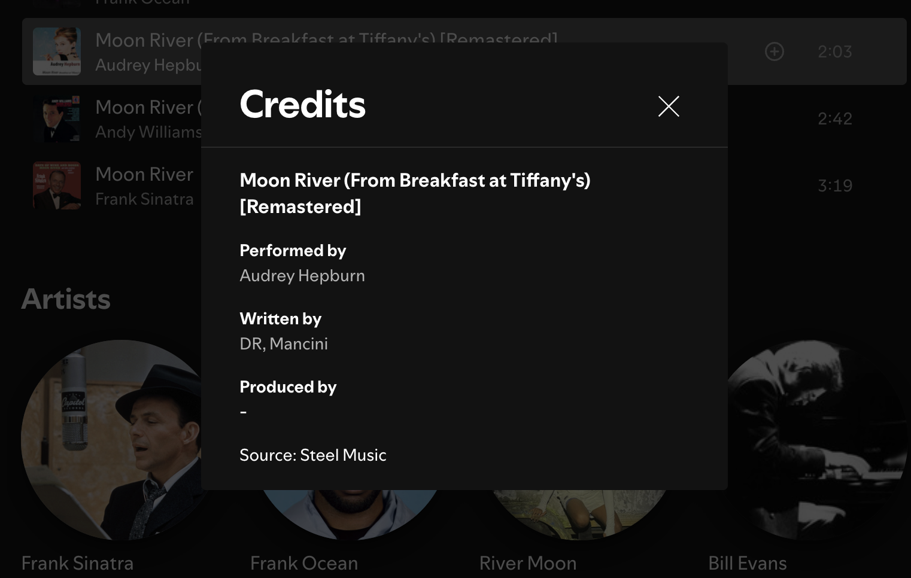
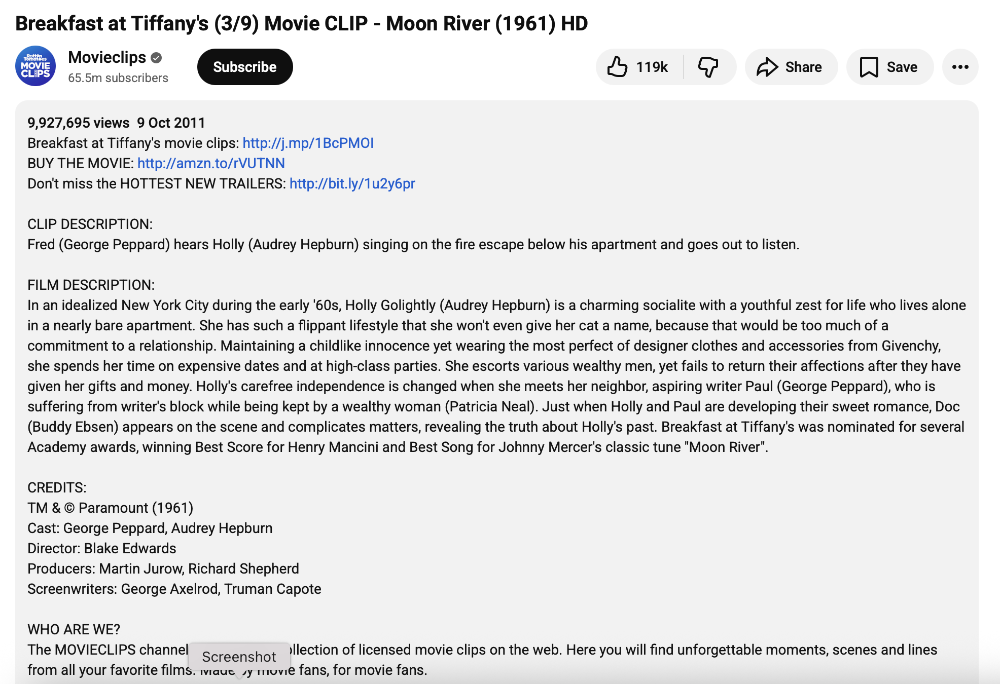

Task Overview
This week I collected metadata related to different versions of “Moon River”. Metadata includes information about the music rather than the music itself, such as release year, lyracist, performer, duration, record label and so on. This information can be relatively easy to find. This data will help me compare how the song has been adapted and received over time, keeping in line with my theme!
Task 1 - My Metadata Gathered
I found official soundtrack versions on Spotify, as well as modern covers on YouTube. It was really interesting seeing how the same song appears in slightly different formats across platforms, and how the information changes depending on who uploaded it.
- Song title
- Performer / Artist name
- Duration (length)
- Release or upload year
- Album / film association
- Record label / uploader
- View counts / popularity (YouTube)
Screenshot Evidence
Below are screenshots from Spotify and YouTube showing examples of metadata I collected. These demonstrate that the same song can have different lives online.
A Spotify example showing title, artist and duration.
A YouTube example showing views, uploader and upload date.
Important Reflection
I faced difficulty in trying to determine what exactly is a credible source on YouTube. I realised there is no single correct version of metadata. Different platforms focus on different information which makes organising my dataset a wee bit challenging.